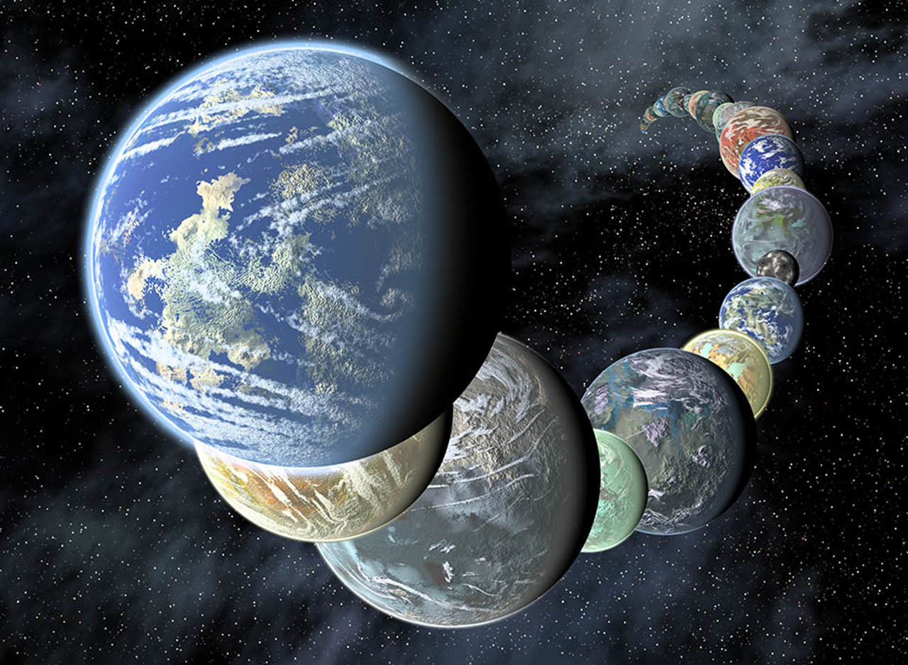
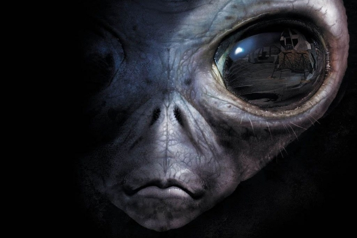

The James Webb Space Telescope (JWST) is a space telescope developed by NASA with contributions from the European Space Agency (ESA), and the Canadian Space Agency (CSA).
Sign up for our product by clicking that button right over there!